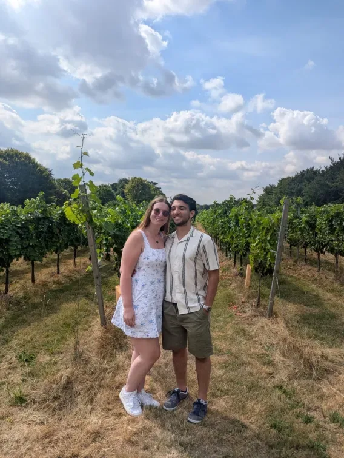
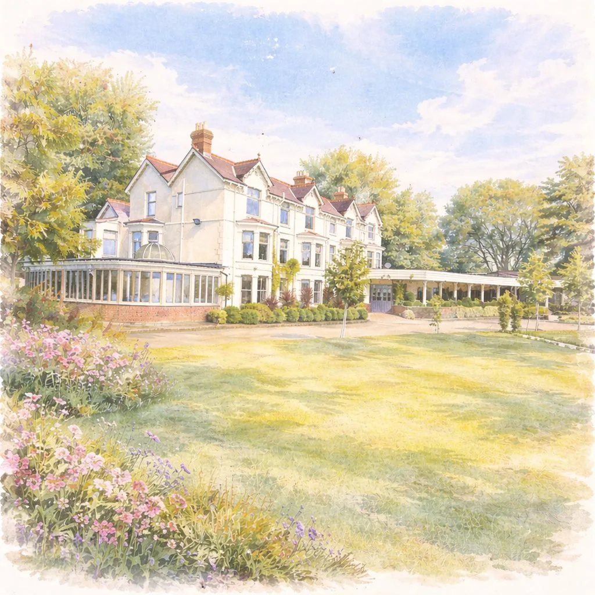
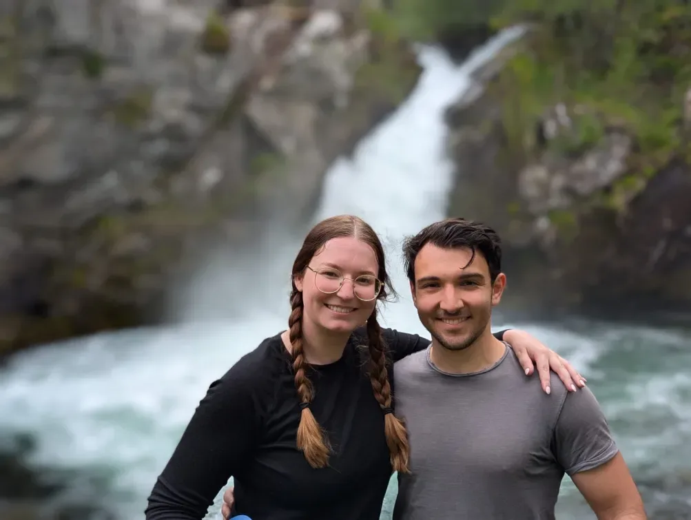

Swansea
It all began in Swansea, where two university students crossed paths, and somehow everything changed. Neither of us knew it yet, but this was the start of forever.
Wales · Starting pointare getting married · 29 April 2027 · Southdowns Manor
We met in our first year of university, right in the middle of Covid. Bethany offered to help Diego with some coursework, and that was that.
Years later, on our very first cruise together, sailing through Iceland and the Norwegian Fjords, Diego proposed on the 22nd of May, 2025. We said yes to forever somewhere between the glaciers and the fjords, and we can't wait to celebrate with the people who mean the most to us.

Four places, one story. Scroll through the chapters and the illustrated route will travel with you.
It all began in Swansea, where two university students crossed paths, and somehow everything changed. Neither of us knew it yet, but this was the start of forever.
Wales · Starting pointHand in hand, we packed up our old lives and built a new one together in Southampton: our first home, our first jobs, our first taste of real life as a team.
England · Harbour · Departure Across the Atlantic
Across the Atlantic
Chasing the Northern Lights and open seas, we set sail on our very first cruise together, an adventure to Iceland that reminded us just how much fun it is to explore the world side by side.
Iceland · Waterfalls · North AtlanticBeneath the towering fjords of Geiranger, surrounded by some of the most breathtaking scenery on earth, Diego got down on one knee — and Beth said yes. A moment we'll treasure forever, in a place as beautiful as our story.
Norway · Fjords · Final destinationHere's how the day will unfold. Times are approximate for now and will be confirmed closer to the date.
This running order goes live on the day and will show you what’s happening right now.
A countryside manor set in the Hampshire hills, with the full address and directions to follow closer to the date.
One setting for the whole celebration: ceremony, wedding breakfast and evening reception.

The look we're hoping for on the day: relaxed, colourful, and right at home in a country garden.

Southdowns Manor sits deep in the South Downs countryside, so here's everything you need to arrive relaxed and find a bed nearby, no hunting across ten browser tabs required.
Tell us where you’re setting off from and we’ll work out the drive, the buffer you’ll want, and whether the train is the easier option.
UK towns and postcodes. Nothing is stored; it’s worked out in your browser.
Driving and have a spare seat, or hoping for one? Mention it in the message box when you RSVP and we’ll happily put people in touch.
Southdowns Manor
Dumpford Lane
Petersfield
Sat-navs sometimes misroute rural venues down the wrong lane. The manor lies just off the A272 between Petersfield and Midhurst, so follow the map for the final stretch.
A spread of places within a short drive, from country-house treats to reliable budget rooms. Drive times below are approximate from the manor.
Luxury & country-house
Elegant country-house hotel with a spa, pools, tennis and croquet lawns. A proper South Downs treat.
A characterful 15th-century coaching inn in the heart of Midhurst, with a spa and centuries of history.
A four-star country house set in 14 acres of gardens inside the South Downs National Park.
Inns & mid-range
A village pub-with-rooms in Stedham, the nearest place to lay your head after the party.
A charming country pub-with-rooms, closer than most Midhurst options.
A family-owned free house with rooms on the edge of the South Downs.
A cosy country pub with rooms, a good back-up if the closer inns fill up.
B&B & character
A quirky 1650s cottage B&B with exceptional reviews, lovely for couples.
Budget
Reliable and good value, with free parking and right by Petersfield station.
The nearest station is Petersfield, with direct trains to and from London Waterloo (around 70 minutes) on the Portsmouth line. It's roughly a 15-minute drive or taxi from the manor.
Mobile coverage is thin around the manor. Screenshot your directions and booking details before you set out.
Some local firms are cash-only or card-with-notice, so it's worth carrying a little cash for the journey home.
The final country lanes are slow going, so aim to reach the manor 20–30 minutes before the ceremony.

Your presence on the day is truly the greatest gift. But for anyone who'd like to give a little something more, we're saving up for our honeymoon, and any contribution, however small, would help make it unforgettable.
We've set up a honeymoon fund where you can contribute directly. Just a click and a little.
Contribute to Our Honeymoon (opens in a new tab)Prefer to give on the day? There'll be a little postbox at the reception for cards and envelopes.
Please don't feel any obligation. Being with us on the day is truly enough. 💐
A few quick answers before you RSVP. We’ll keep this updated as plans are finalised.
Please RSVP by 28 February 2027 so we have plenty of time to confirm final numbers.
Please refer to your invitation. If your invitation includes a named guest, they will be included when you RSVP.
We’ll confirm this clearly on each invitation. If you’re unsure, please get in touch with us directly.
Yes, there is parking at the manor. We’ll add any final parking instructions closer to the day.
Yes, we strongly recommend booking taxis in advance as the venue is in a rural area and app-based taxis may not be reliable nearby.
The dress code is Garden Formal. Think relaxed, colourful, and suitable for a countryside celebration.
Kindly reply by 28 February 2027. We can't wait to celebrate the day with you.
The reply deadline has passed — you’re still very welcome to reply here, or email us if that’s easier.
We can't wait to celebrate with you on 29 April at Southdowns Manor.